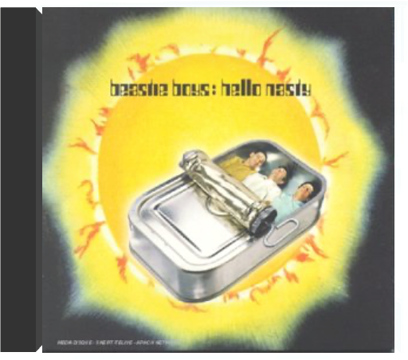

hello nastybeastie boys  Les trois "Beatles du rap" reviennent en 1998 avec un album rempli comme un oeuf d'idées originales et de trouvailles sonores. Eclectique et roboratif : le client en a pour son argent. A vrai dire, Hello Nasty est un peu l'équivalent discographique d'un gaspacho géant, voire d'une paella king size : on y entend des beats variés, des samples de tous horizons et des délires tous azimuts. Non contents de distiller un rap qui ne ressemble qu'à eux, les Beastie Boys agrémentent leur disque de pauses musicales à la sauce pop-folk-60's-lounge-dub du meilleur effet. Une fois de plus, ils produisent eux-mêmes en compagnie de Mario Caldato Jr. et invitent une bonne dizaine de musiciens/vocalistes parmi lesquels le grand allumé jamaïcain Lee "Scratch" Perry. Sans oublier le sorcier des platines Mix Master Mike. Bref, une leçon de liberté artistique définitivement "Intergalactic". —José Guerreiro  the sound of sciencebeastie boys the sound of sciencebeastie boys Quinze ans de chaos rigolo présentés dans le désordre. Tout est là : les débuts hardcore, le rap metal du premier album, le bazar de «Paul's Boutique», le groove des années soixante-dix de «Check Your Head» et «Ill Communication», les tubes surréalistes de «Hello Nasty». Ajoutez pour la bonne mesure des inédits country , des faces B, un remix de Fatboy Slim et une reprise hilarante de "Benny & The Jets" d'Elton John . Le foutoir semble bien être la seule ligne de conduite de ce trio qui, après avoir hurlé : «Battez-vous pour vos droits [de faire la fête]», tourne partiellement bouddhiste et organise des concerts de charité pour le Tibet. Derrière cette apparente confusion, il ne faut pourtant pas négliger un éclectisme musical qui donne à leur rap une richesse rare. Ils ne se refusent rien : sampler Clash ou Dylan, utiliser de vrais instruments, travailler avec des techniciens innovateurs comme Rick Rubin, les Dust Brothers ou Mario Caldato. C'est ainsi qu'ils exercent une influence durable sur d'autres explorateurs comme Beck ou le Jon Spencer Blues Explosion. —Hubert Deshouse  paul's boutique (20th anniversary)beastie boys paul's boutique (20th anniversary)beastie boys 20TH ANNIVERSARY EDITION : On 180-gram vinyl, in a gatefold sleeve. Remastered in 2009. Ambitious 1989 album, produced by The Dust Brothers. Includes "Hey Ladies" and "Shake Your Rump".  the in sound from way outbeastie boys the in sound from way outbeastie boys Originally released through the Beastie Boys' French fan club, The In Sound From Way Out! is a collection of the group's funky instrumentals from Check Your Head and Ill Communication, with a couple of new tracks thrown in. The Beasties have a flair for loose, gritty funk and soul-jazz, and the stuttering, greasy keyboards of Money Mark give the music an extra edge — he helps make the music sound as authentic as anything from the early '70s. Pressed on 180G vinyl.  abbey roadthe beatles abbey roadthe beatles Si Abbey Road a conclu en beauté la malgré tout très courte carrière des Beatles (six, sept ans d'enregistrements, pas plus), il demeure aussi l'album où le groupe s'offre le plus dans toute sa diversité. Dominé bien sûr par une paire d'atouts maîtres, le carré d'as permet dans cet ultime chef-d'oeuvre de goûter par exemple la fraîcheur désinvolte de Ringo ("Octopus's Garden"). Ou la spiritualité émerveillée de Harrison. "Here Comes The Sun", malgré la candeur naïve de son texte, contient simplement parmi les arpèges de guitare les plus fondateurs. Et quand le guitariste Harrison tisse des notes d'amour, cela devient quelque chose - "Something" - d'éternel. Mais le coeur du disque, son noyau dur dirons-nous, c'est tout ce que mettent dans la corbeille les rivaux indissociables Lennon et McCartney. Ils inventent là l'usage du synthétiseur ("Because"), et tandis que Lennon étale son irréductible cuir rock ("Come Together"), Macca répond avec "Maxwell's Silver Hammer", manière de l'énerver un peu. L'histoire dit qu'il y parvint (et que Lennon détestait cette chanson). L'auditeur, lui, contemple, béat, la joute musicale. Et savourera encore longtemps les "Because" et "Oh Darling" livrés ici en pâture. L'un des deux meilleurs albums des Beatles. —José Ruiz  revolverthe beatles revolverthe beatles Même sous forme de disque compact cet album a deux faces : celle des gentils Beatles, rois de la mélodie facile et celle plus sombre, cachée jusqu'alors, des Beatles psychédéliques, expérimentateurs et habitués des paradis artificiels. La face heureuse et insouciante c'est celle de McCartney qui aligne ici quelques classiques élégants : "Eleanor Rigby" et ses cordes classiques, "Here, There And Everywhere" avec sa mélodie dans le style music- hall ou "Got To Get You Into My Life, proche de la grande variété américaine. Mais la palme de la légèreté revient, évidemment, à Ringo Starr qui chante de sa voix bonhomme "Yellow Submarine", devenu un classique de la chanson pour enfants. La face sombre, vous l'aurez deviné, c'est celle de Lennon qui raconte, ici, ses rêves et ses hallucinations : la dérive psychédélique avec guitares à l'envers de "She Said She Said", le rock cynique "Dr Robert" sur un faux médecin dealer. Et puis, surtout, il y a "Tomorrow Never Knows", summum de l'expérimentation, jamais égalé mais souvent copié (cf les Chemical Brothers et Noel Gallagher avec "Setting Sun"). Orchestre à l'envers, boucle de batterie dance avant l'heure, vocaux saturés, résonance de sitar continue : les nouveaux Beatles naissent vraiment avec ce morceau. Ils sont prêts pour les aventures à venir : "Strawberry Fields Forever" et Sgt Pepper's. —Hubert Deshouse  rubber soulthe beatles rubber soulthe beatles Quand Rubber Soul s'ouvre sur "Drive My Car", on est en terrain connu : les Beatles jouent une chanson pop parfaite de deux minutes trente. Ce qui, on l'avouera aisément, n'est déjà pas si mal ! Puis arrive "Norvegian Wood", une folk song à la mélodie sinueuse embellie par un sitar indien ! Là, d'un seul coup, on se trouve à des années-lumière de "She Loves You" et de "Love Me Do" ! Les Beatles de 1965 s'émancipent des règles du marché : refrain en français et arpèges jazzy sur "Michelle", solo de piano baroque sur "In My Life"... Cet affranchissement, qui va culminer sur Sgt. Pepper's et sur le Double Blanc, n'en est qu'à ses prémices mais il donne déjà des merveilles. —Hubert Deshouse  sgt. pepper's lonely hearts club bandthe beatles sgt. pepper's lonely hearts club bandthe beatles La première fois qu'Éric a entendu Sgt Pepper's Lonely Hearts Club Band, c'était sur un mini K7, pour sa communion... Micky, lui, était batteur dans le Vaucluse et, en rentrant, du Discobole, il a passé six heures d'affilée à essayer de rejouer l'intro de "Sgt. Pepper's Lonely Hearts Club Band (Reprise)". Ça n'avait l'air de rien, pourtant il n'y arrivait pas... Une fille l'avait prêté à Benoît; le disque sautait sans arrêt mais en rajoutant une pièce de cinq centimes sur le saphir ça passait... Mick et Keith l'ont écouté ensemble et ça leur a un peu mis les boules... Pascal, c'était dans un restaurant ; il n'écoutait que du punk et de la new wave mais, quand même, ça lui rappelait quelque chose. Il est allé l'acheter en sortant du restaurant... Adèle, c'était chez son fiancé, un matin de mai, ça sentait le lilas. Son amoureux pleurait chaque fois qu'il écoutait la voix de Lennon sur le début de "Lucy In The Sky With Diamonds"... Brian, l'a écouté dans son salon, assis dans le sable. Il a aussitôt appelé ses frères et son cousin pour enregistrer une version de "With A Little Help From My Friends"... Et vous ? —Hubert Deshouse  welcome to the cruel worldben harper welcome to the cruel worldben harper Bien qu'adoptant un style (le blues) largement familier au public, Ben Harper fit en sorte dès ce premier album de l'aborder avec une fraîcheur et une inventivité bouleversante. De telle sorte que très vite, cette musique balisée devint entre ses doigts un hybride, évoluant vers des genres étrangers. Ben Harper fonde Welcome To The Cruel World sur un travail remarquable à la guitare slide, qu'il va soutenir d'une voix capable de métamorphoses étonnantes, un peu à la manière d'Aaron Neville ("Breakin'Down") en montant dans les aigus pour mieux jouer du vibrato. Cette guitare, un dobro ou une Weissenborn, investit l'espace sonore en compagnie de percussions caractéristiques, ceci pour habiller les chansons de révolte de cet artiste en colère, à la frontière de l'imprécation mystique. Harper est capable d'une déroutante versatilité, au détour d'un thème sobre ("Waiting On An Angel") il va se montrer bouleversant de proximité, l'instant d'après il capte une rythmique entre cajun et reggae. Ainsi, au fil des titres, l'album s'avère d'une grande richesse. Il signalait un artiste doté d'un potentiel considérable. La chose fut vérifiée par la suite. —José Ruiz  fight for your mindben harper fight for your mindben harper Lentement, paisiblement, sans tapage, Ben Harper s'est transformé en artiste-culte. Presque en gourou d'une génération. Dès ce deuxième album paru en 1995, il marquait son territoire artistique. Il balisait ainsi un champ musical plutôt très étendu, alors que le corps de son style se trouvait autour du blues. Mais ce Fight For Your Mind ne peut se résumer aux douze mesures. Tout au plus les guitares qu'il joue renvoient-elles à l'héritage des anciens. Mais tout le reste, et son message à cet égard est édifiant, dépasse largement du corset bluesy. On trouve, au contraire, dans ce CD l'exigence d'un musicien en quête d'expériences. De rencontres fertiles. Il va utiliser les percussions africaines et asiatiques. Il va réunir les choristes américains. Il va aussi proclamer sa foi en Dieu et en l'amour. Mais malgré ses intentions pacifiques, Ben Harper manie l'overdrive quand les circonstances l'exigent. Alors les guitares grincent et la batterie pilonne. Jusqu'à ce qu'à nouveau, tablas et congas installent, avec les cordes devenues acoustiques, le climat d'une nouvelle confidence, plus folk cette fois. C'est d'ailleurs dans cet entourage chaud et complice que le chanteur paraît le plus chez lui. Pour ses textes révoltés, aussi pour ses rythmiques puissantes mais sobres, Ben Harper évoque Marley. Et dans l'étirement largué de "God Fearing Man", on pense aussi à un Neil Young un peu mystique. C'est vrai que cet homme est "différent"... —José Ruiz |


 Made with Delicious Library
Made with Delicious LibraryNancy, State zipflap congrotus delicious library Thomas, Julien